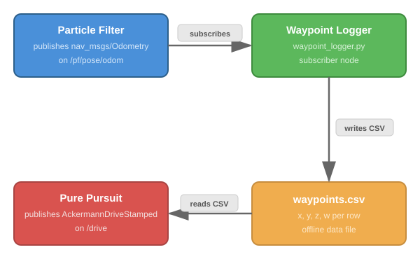
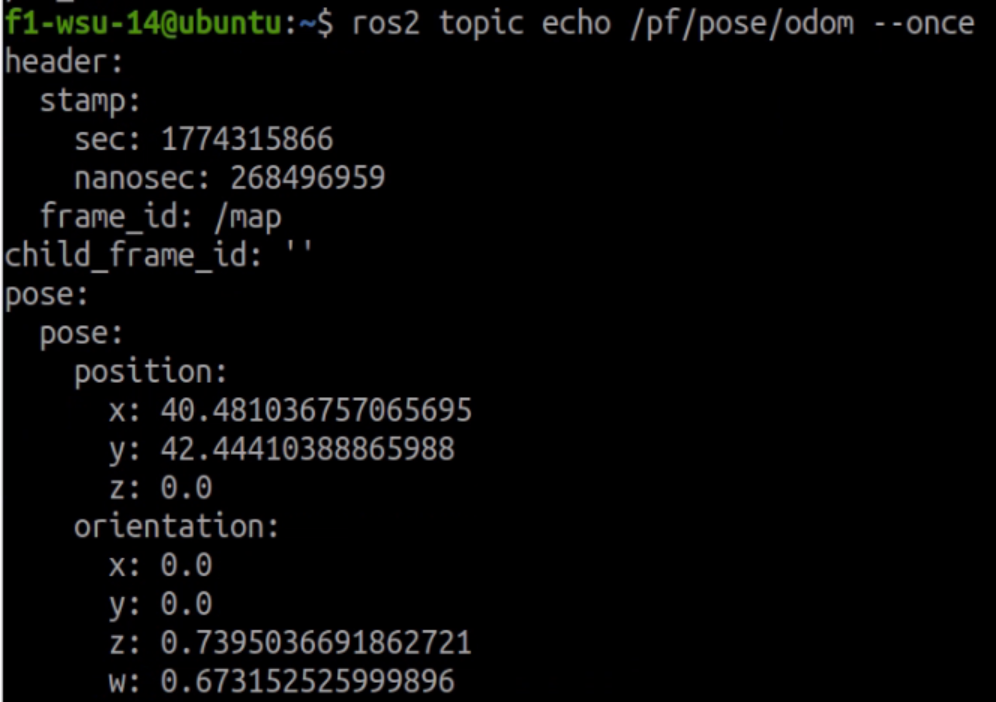

Building the Waypoint Logger¶
Before you can record waypoints, you need to create the pure_pursuit package and write the waypoint_logger node. This tutorial walks through the code step by step.
Important
Update your robot first — the waypoint_viz package and updated pf.rviz must be installed before starting this lab:
# 1. Pull and update submodules
cd ~/f1tenth_ws/src/f1tenth_system
git pull origin humble-devel
git submodule update --init --recursive
# 2. Remove old standalone dirs (if they still exist)
rm -rf ~/f1tenth_ws/src/particle_filter
sudo rm -rf ~/f1tenth_ws/src/range_libc
# 3. Clean build (stale caches point to old paths)
cd ~/f1tenth_ws
rm -rf build/ install/
colcon build --symlink-install
source install/setup.bash
Note
This tutorial covers the concepts behind the code. For the graded assignment with deliverables, see Lab 6 - Waypoint Logger for Pure Pursuit in the Weber Assignments.
Why a Waypoint Logger?¶
Pure Pursuit needs a pre-recorded path to follow. That path is a CSV file of poses (x, y, heading) captured while you manually drive the car around the track. The waypoint logger subscribes to the particle filter’s pose output and writes each pose to a file as you drive.
The pipeline looks like this:


The particle filter publishes the car’s estimated map-relative position at ~30-40 Hz. Your logger captures those poses so the Pure Pursuit node can replay the path later.
Step 1 — Create the Package¶
On the robot, create a new ROS 2 Python package:
cd ~/f1tenth_ws/src
ros2 pkg create pure_pursuit --build-type ament_python --dependencies rclpy nav_msgs geometry_msgs visualization_msgs std_msgs
This generates the standard ament_python package structure:
pure_pursuit/
package.xml
setup.py
setup.cfg
pure_pursuit/
__init__.py
The --dependencies flag adds rclpy, nav_msgs, and geometry_msgs to package.xml automatically. These are the packages your node will import.
Create a directory to store waypoint CSV files:
mkdir -p ~/f1tenth_ws/src/pure_pursuit/maps
Step 2 — Understand the Data Source¶
The particle filter publishes on /pf/pose/odom using the nav_msgs/msg/Odometry message type. The fields you care about are nested inside the message:
Odometry
pose
pose
position
x <-- map x coordinate
y <-- map y coordinate
orientation
z <-- quaternion z (encodes heading)
w <-- quaternion w (encodes heading)
You can inspect a live message yourself to see exactly what the particle filter publishes. You need bringup and the particle filter running first:
Start bringup (Terminal 1)
Launch the particle filter (Terminal 2):
cd ~/f1tenth_ws source /opt/ros/humble/setup.bash source install/setup.bash ros2 launch particle_filter localize_launch.py
Open RViz2 with the particle filter config (Terminal 3):
cd ~/f1tenth_ws source /opt/ros/humble/setup.bash source install/setup.bash rviz2 -d ~/f1tenth_ws/install/particle_filter/share/particle_filter/rviz/pf.rviz
Set the 2D Pose Estimate so the particle filter is localized.
Echo the topic (Terminal 4):
ros2 topic echo /pf/pose/odom --once
This prints a single Odometry message showing all the fields:


Most of this message is not needed. Your logger only extracts four values from the pose.pose section:
Field |
Units |
Description |
|---|---|---|
|
meters |
Car’s horizontal position on the map |
|
meters |
Car’s vertical position on the map |
|
unitless (-1 to 1) |
Quaternion z — encodes heading (rotation around vertical axis) |
|
unitless (-1 to 1) |
Quaternion w — scalar part; with z, gives heading: |
Note
Why quaternions instead of an angle? ROS 2 uses quaternions to represent orientation because they avoid gimbal lock and singularities. For a car driving on a flat surface, only z and w matter (x and y are zero). You don’t need to convert to an angle for storage — just save the raw z and w values. The Pure Pursuit node will convert them when it needs the heading.
Step 3 — Write the Node¶
Create pure_pursuit/pure_pursuit/waypoint_logger.py. The node has three responsibilities:
Open a CSV file when it starts
Subscribe to
/pf/pose/odomand write each pose to the fileClose the file cleanly on shutdown
Subscription and Callback¶
The core of a ROS 2 subscriber node is the callback. Every time the particle filter publishes a new pose, your callback fires and receives the Odometry message:
from nav_msgs.msg import Odometry
self.subscription = self.create_subscription(
Odometry,
'/pf/pose/odom',
self.pose_callback,
10
)
The 10 is the QoS queue depth — it buffers up to 10 messages if the callback is slow. For a simple CSV writer this is more than enough.
Extracting Pose Data¶
Inside the callback, pull out the four values you need:
def pose_callback(self, msg):
x = msg.pose.pose.position.x
y = msg.pose.pose.position.y
z = msg.pose.pose.orientation.z
w = msg.pose.pose.orientation.w
These four numbers fully describe where the car is and which direction it is facing.
Writing to CSV¶
Use Python’s built-in csv module or simply write comma-separated strings. The CSV should have no header row — just four values per line:
1.234, 5.678, 0.123, 0.992
1.245, 5.690, 0.125, 0.992
...
Open the file when the node initializes and write in the callback:
import csv
self.file = open('/path/to/waypoints.csv', 'w', newline='')
self.writer = csv.writer(self.file)
# In the callback:
self.writer.writerow([x, y, z, w])
Clean Shutdown¶
When you press Ctrl+C, ROS 2 shuts down the node. You need to make sure the CSV file is closed properly so no data is lost. Two common approaches:
try/finally in
main():def main(): rclpy.init() node = WaypointLogger() try: rclpy.spin(node) finally: node.file.close() node.destroy_node() rclpy.shutdown()
Override
destroy_node():def destroy_node(self): self.file.close() super().destroy_node()
Either approach works. The key is that the file gets closed so the OS flushes all buffered writes to disk.
Recording Quality — Minimum Distance Filter¶
Recording at full 30-40 Hz frequency produces problems when the car is stationary, slow, or jerky — hundreds of waypoints cluster at the same map location, and pure pursuit oscillates trying to track them. The fix is to only write a waypoint when the car has moved a minimum distance from the last recorded point:
import math
# In __init__:
self.last_x = None
self.last_y = None
self.min_distance = 0.1 # meters between waypoints
# In pose_callback, before writing to CSV:
if self.last_x is not None:
dist = math.hypot(x - self.last_x, y - self.last_y)
if dist < self.min_distance:
return
self.last_x = x
self.last_y = y
This produces evenly-spaced waypoints regardless of how fast or slow the car moves. Tune min_distance up (0.2 m) for sparser paths on large tracks, or down (0.05 m) for tighter paths with sharp corners.
If you have an existing recording without this filter, you can thin it after the fact:
awk 'NR % 5 == 0' waypoints.csv > waypoints_clean.csv
Terminal Feedback¶
At ~30-40 Hz, printing every pose would flood the terminal. Instead, print a confirmation periodically (e.g., every 50th pose):
self.count = 0
def pose_callback(self, msg):
# ... write to CSV ...
self.count += 1
if self.count % 50 == 0:
self.get_logger().info(f'Recorded {self.count} waypoints')
This gives you visual feedback that the logger is working without overwhelming the output.
Live Visualization in RViz2¶
Your waypoint logger can publish markers to RViz2 so you can see the recorded path growing in real time as you drive. The pf.rviz layout already has these displays configured — no RViz2 setup needed.
Add these imports:
from nav_msgs.msg import Path
from geometry_msgs.msg import PoseStamped
from visualization_msgs.msg import Marker, MarkerArray
from std_msgs.msg import ColorRGBA
from rclpy.qos import QoSProfile, QoSDurabilityPolicy, QoSReliabilityPolicy, QoSHistoryPolicy
Add this to __init__:
latched_qos = QoSProfile(
depth=1,
durability=QoSDurabilityPolicy.TRANSIENT_LOCAL,
reliability=QoSReliabilityPolicy.RELIABLE,
history=QoSHistoryPolicy.KEEP_LAST,
)
self.marker_pub = self.create_publisher(MarkerArray, '/waypoint_viz/waypoints', latched_qos)
self.path_pub = self.create_publisher(Path, '/waypoint_viz/path', latched_qos)
self.path_msg = Path()
self.path_msg.header.frame_id = 'map'
self.marker_array = MarkerArray()
Add this method to your class — call it in the callback after writing to the CSV:
def publish_waypoint_viz(self, x, y, z, w):
"""Publishes the current list of waypoints to RViz for live visualization."""
m = Marker()
m.header.frame_id = 'map'
m.header.stamp = self.get_clock().now().to_msg()
m.ns = 'waypoints'
m.id = len(self.marker_array.markers)
m.type = Marker.SPHERE
m.action = Marker.ADD
m.pose.position.x = x
m.pose.position.y = y
m.scale.x = 0.1
m.scale.y = 0.1
m.scale.z = 0.1
m.color = ColorRGBA(r=1.0, g=1.0, b=0.0, a=1.0)
m.pose.orientation.w = 1.0
self.marker_array.markers.append(m)
self.marker_pub.publish(self.marker_array)
ps = PoseStamped()
ps.header.frame_id = 'map'
ps.pose.position.x = x
ps.pose.position.y = y
ps.pose.orientation.z = z
ps.pose.orientation.w = w
self.path_msg.poses.append(ps)
self.path_msg.header.stamp = self.get_clock().now().to_msg()
self.path_pub.publish(self.path_msg)
In the callback, after writing to the CSV and updating the distance tracker, call self.publish_waypoint_viz(x, y, z, w). You should see yellow dots and an orange path building in RViz2 as you drive.
Note
This publishes on /waypoint_viz/waypoints and /waypoint_viz/path — the same topics used by the waypoint_viz package during pure pursuit. During recording, your logger node handles the visualization directly. During pure pursuit, a separate waypoint_viz node reads the saved CSV and shows the path plus a green lookahead marker.
Step 4 — Register the Entry Point¶
ROS 2 Python packages use setup.py entry points to define executable node names. Edit setup.py in the pure_pursuit package and add your node to console_scripts:
entry_points={
'console_scripts': [
'waypoint_logger = pure_pursuit.waypoint_logger:main',
],
},
This maps the command ros2 run pure_pursuit waypoint_logger to the main() function in your waypoint_logger.py file.
Step 5 — Build and Verify¶
cd ~/f1tenth_ws
colcon build --packages-select pure_pursuit
source install/setup.bash
Verify the node is registered:
ros2 run pure_pursuit waypoint_logger --help
If it launches without import errors, the package is built correctly. You can now proceed to Recording Waypoints to record a lap of waypoints on the actual robot.
Key Concepts Recap¶
Concept |
What You Learned |
|---|---|
|
ROS 2 Python package structure with |
Subscriptions |
How to subscribe to a topic and process messages in a callback |
Odometry message |
How pose data is structured inside |
CSV file I/O |
Writing real-time data to a file with clean shutdown handling |